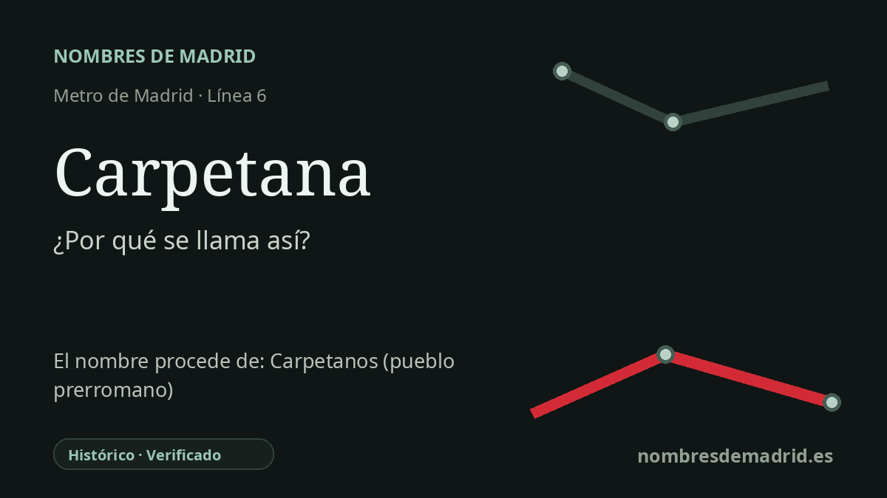

Publicado el · Investigación de Nombres de Madrid · Cómo verificamos cada origen · 5 fuentes consultadas
Respuesta rápida
Carpetana debe su nombre a la Vía Carpetana, la avenida situada sobre la estación. La vía recuerda a los carpetanos, el pueblo prerromano asociado a la antigua Carpetania en la zona central del valle del Tajo, incluida la actual Comunidad de Madrid.
La historia del nombre
Carpetana es un nombre de estación tomado de la calle situada sobre ella: la Vía Carpetana. La ficha histórica de Metro de Madrid establece claramente la cadena: la estación se localiza en la Vía Carpetana, y esa avenida toma su nombre del pueblo de los carpetanos, vinculado al centro de la antigua península ibérica.
Los carpetanos pertenecen a la geografía histórica de la Carpetania, una región prerromana en torno a la zona central del valle del Tajo. El tesauro oficial del patrimonio cultural español sitúa la Carpetania en áreas de las actuales provincias de Toledo, Madrid, Guadalajara, Cuenca y parte de Ciudad Real, y señala que los carpetanos aparecen en las fuentes clásicas con motivo de la expedición de Aníbal de 221-220 a. C.
La estación abrió dentro del tramo Oporto-Laguna de la línea 6 en 1983. Metro de Madrid la describe como parte de la ampliación suroeste de la línea 6, uno de los pasos hacia el cierre posterior de la línea circular, que culminó el 10 de mayo de 1995.
Carpetana conserva además otra capa de historia, mucho más antigua, bajo tierra. Durante obras de accesibilidad y modernización iniciadas en 2008 se descubrió un importante yacimiento fósil del Mioceno medio; hasta junio de 2009 se recuperaron más de 10.000 restos fósiles. La estación acoge hoy el espacio Yacimiento de Carpetana de Metro, con reproducciones, murales y reconstrucciones de animales como mastodontes, rinocerontes, caballos primitivos, tortugas gigantes y grandes carnívoros que vivieron aquí hace unos 14 millones de años.
El origen del nombre es, por tanto, seguro, pero conviene hacer dos matizaciones. La primera es que los fósiles no aparecieron durante la construcción original de la estación en 1983, sino durante obras posteriores de 2008-2009. La segunda es que, aunque la ficha de Metro llama celta al pueblo carpetano, el tesauro oficial de patrimonio indica que su filiación étnico-lingüística no está clara, por lo que en textos públicos es más prudente hablar de 'pueblo prerromano' salvo que se explique el debate.